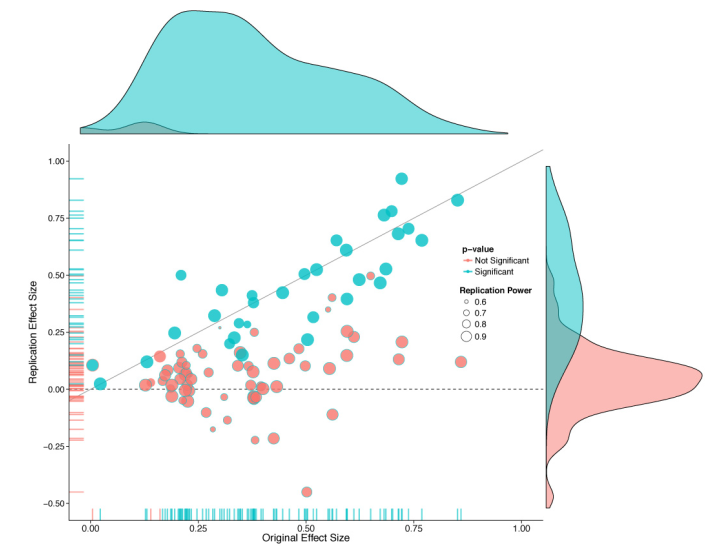
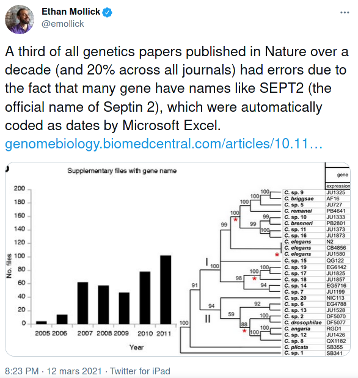

11 Replication crisis
In recent years, many team efforts have performed so-called replications of existing methodological papers to assess the robustness of their findings. Perhaps unsurprisingly, many replications failed to yield anything like what authors used to claim, or found much weaker findings. This chapter examines some of the causes of this lack of replicability.
Learning objectives
- Defining replicability and reproducibility.
- Understanding the scale of the replication crisis.
- Recognizing common statistical fallacies.
- Listing strategies for enhancing reproducibility.
We adopt the terminology of Claerbout and Karrenbach (1992): a study is said to be reproducible if an external person with the same data and enough indications about the procedure (for example, the code and software versions, etc.) can obtain consistent results that match those of a paper. A related scientific matter is replicability, which is the process by which new data are collected to test the same hypothesis, potentially using different methodology. Reproducibility is important because it enhances the credibility of one’s work. Extensions that deal with different analyses leading to the same conclusion are described in The Turing Way and presented in Figure 11.1.
Why is reproducibility and replicability important? In a thought provoking paper, Ioannidis (2005) claimed that most research findings are wrong. The abstract of his paper stated
There is increasing concern that most current published research findings are false. […] In this framework, a research finding is less likely to be true when the studies conducted in a field are smaller; when effect sizes are smaller; when there is a greater number and lesser preselection of tested relationships; where there is greater flexibility in designs, definitions, outcomes, and analytical modes; when there is greater financial and other interest and prejudice; and when more teams are involved in a scientific field in chase of statistical significance.
Since its publication, collaborative efforts have tried to assess the scale of the problem by reanalysing data and trying to replicate the findings of published research. For example, the “Reproducibility [sic] Project: Psychology” (Nosek et al. 2015)
conducted replications of 100 experimental and correlational studies published in three psychology journals using high powered designs and original materials when available. Replication effects were half the magnitude of original effects, representing a substantial decline. Ninety seven percent of original studies had significant results. Thirty six percent of replications had significant results; 47% of original effect sizes were in the 95% confidence interval of the replication effect size; 39% of effects were subjectively rated to have replicated the original result; and, if no bias in original results is assumed, combining original and replication results left 68% with significant effects. […]
A large share of findings in the review were not replicable or the effects were much smaller than claimed, as shown by Figure 2 from the study. Such findings show that the peer-review procedure is not foolproof: the “publish-or-perish” mindset in academia is leading many researchers to try and achieve statistical significance at all costs to meet the 5% level criterion, whether involuntarily or not. This problem has many names: \(p\)-hacking, harking or to paraphrase a story of Jorge Luis Borges, the garden of forking paths. There are many degrees of freedom in the analysis for researchers to refine their hypothesis after viewing the data, conducting many unplanned comparisons and reporting selected results.

Another problem is selective reporting. Because a large emphasis is placed on statistical significance, many studies that find small effects are never published, resulting in a gap. Figure 11.3 from Zwet and Cator (2021) shows \(z\)-scores obtained by transforming confidence intervals reported in Barnett and Wren (2019). The authors used data mining techniques to extract confidence intervals from abstracts of nearly one million publication in Medline published between 1976 and 2019. If most experiments yielded no effect and were due to natural variability, the \(z\)-scores should be normally distributed, but Figure 11.3 shows a big gap in the bell curve between approximately \(-2\) and \(2\), indicative of selective reporting. The fact that results that do not lead to \(p < 0.05\) are not published is called the file-drawer problem.

The ongoing debate surrounding the reproducibility crisis has sparked dramatic changes in the academic landscape: to enhance the quality of studies published, many journal now require authors to provide their code and data, to pre-register their studies, etc. Teams lead effort (e.g., the Experimental Economics Replication Project) try to replicate studies, with mitigated success so far. This inside recollection by a graduate student shows the extent of the problem.
This course will place a strong emphasis on identifying and avoiding statistical fallacies and showcasing methods than enhance reproducibility. How can reproducible research enhance your work? For one thing, this workflow facilitates the publication of negative research, forces researchers to think ahead of time (and receive feedback). Reproducible research and data availability also leads to additional citations and increased credibility as a scientist.
Among good practices are
- pre-registration of experiments and use of a logbook.
- clear reporting of key aspects of the experiment (choice of metric, number of items in a Likert scale, etc.)
- version control systems (e.g., Git) that track changes to files and records.
- archival of raw data in a proper format with accompanying documentation.
Keeping a logbook and documenting your progress helps your collaborators, reviewers and your future-self understand decisions which may seem unclear and arbitrary in the future, even if they were the result of a careful thought process at the time you made them. Given the pervasiveness of the garden of forking paths, pre-registration helps you prevents harking because it limits selective reporting and unplanned tests, but it is not a panacea. Critics often object to pre-registration claiming that it binds people. This is a misleading claim in my view: pre-registration doesn’t mean that you must stick with the plan exactly, but merely requires you to explain what did not go as planned if anything.
Version control keeps records of changes to your file and can help you retrieve former versions if you make mistakes at some point.

Archival of data helps to avoid unintentional and irreversible manipulations of the original data, examples of which can have large scale consequences as illustrated in Figure 11.4, who report flaws in genetic journals due to the automatic conversion of gene names to dates in Excel. These problems are far from unique. While sensitive data cannot be shared “as is” because of confidentiality issues, in many instances the data can and should be made available with a licence and a DOI to allow people to reuse it, cite and credit your work.
To enforce reproducibility, many journals now have policy regarding data, material and code availability. Some journals encourage such, while the trend in recent years has been to enforce. For example, Nature require the following to be reported in all published papers:

11.1 Causes of the replication crisis
Below are multiple (non-exclusive) explanations for the lack of replication of study findings.
11.1.1 The garden of forking paths
The garden of forking paths, named after a novel of Borges, is a term coined by Andrew Gelman to refer to researchers’ degrees of freedom. With vague hypothesis and data collection rules, it is easy for the researcher to adapt and interpret the conclusions in a way that fits his or her chosen narratives. In the words of Gelman and Loken (2014)
Given a particular data set, it can seem entirely appropriate to look at the data and construct reasonable rules for data exclusion, coding, and analysis that can lead to statistical significance. In such a case, researchers need to perform only one test, but that test is conditional on the data.
This user case is not accomodated by classical testing theory. Research hypothesis are often formulated in a vague way, such that different analysis methods, tests may be compatible. Abel et al. (2022) recent preprint found that preregistration alone did not solve this problem, but that publication bias in randomized control trial was alleviated by publication of pre-analysis plans. This is directly related to the garden of forking path.
11.1.2 Selective reporting
Also known as the file-drawer problem, selective reporting occurs because publication of results that fail to reach statistical significance (sic) are harder to publish. In much the same way as multiple testing, if 20 researchers perform a study but only one of them writes a paper and the result is a fluke, then this indicates. There are widespread indications publication bias, as evidence by the distribution of \(p\)-values reported in papers. A recent preprint of a study found the prevalance to be higher in online experiments such as Amazon MTurks.
P-hacking and the replication crisis has lead many leading statisticians to advocate much more stringent cutoff criterion such as \(p < 0.001\) instead of the usual \(p<0.05\) criterion as level for the test. The level \(\alpha=5\)% is essentially arbitrary and dates back to Fisher (1926), who wrote
If one in twenty does not seem high enough odds, we may, if we prefer it, draw the line at one in fifty or one in a hundred. Personally, the writer prefers to set a low standard of significance at the 5 per cent point, and ignore entirely all results which fails to reach this level.
Thinking outside the box
Methods that pool together results, such as meta-analysis, are sensitive to selective reporting. Why does it matter?
11.1.3 Non-representative samples
Many researchers opt for convenience samples by using online panels such as Qualtrics, Amazon MTurks, etc. The quality of those observations is at best dubious: ask yourself whether you would answer such as survey for a small amount. Manipulation checks to ensure participants are following, information is not completed by bots, a threshold for the minimal time required to complete the study, etc. are necessary (but not sufficient) conditions to ensure that the data are not rubbish.
A more important criticism is that the people who answer those surveys are not representative of the population as a whole: sampling bias thus plays an important role in the conclusions and, even if the summary statistics are not too different from the general population, they may exhibit different opinions, levels of skills, etc. than most.

The same can be said of panels of students recruited in universities classes, who are more young, educated and perhaps may infer through backward induction the purpose of the study and answer accordingly.
11.2 Summary
Operating in an open-science environment should be seen as an opportunity to make better science, offer more opportunities to increase your impact and increase the likelihood that your work gets published regardless of whether the results turn out to be negative. It is the right thing to do and it increases the quality of research produced, with collateral benefits because it forces researchers to validate their methodology before, to double-check their data and their analysis and to adopt good practice.
There are many platforms for preregistering studies and sharing preanalysis plans, scripts and data, with different level of formality. One such is the Research Box.
Your turn
Reflect on your workflow as applied researcher when designing and undertaking experiments. Which practical aspects could you improve upon to improve the reproducibility of your study?